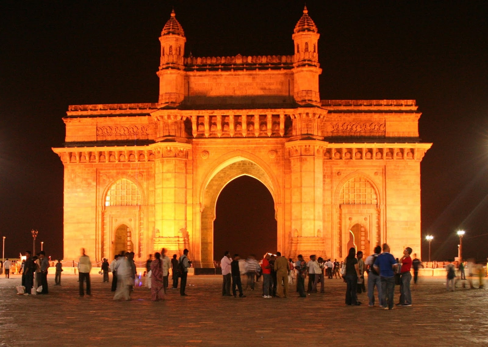
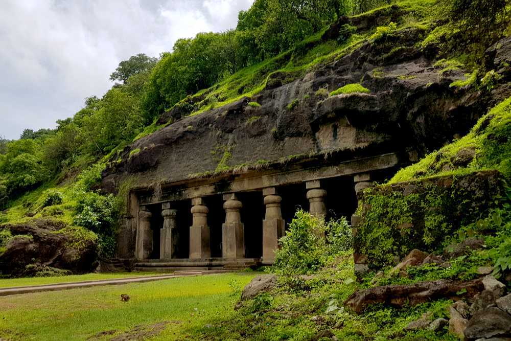
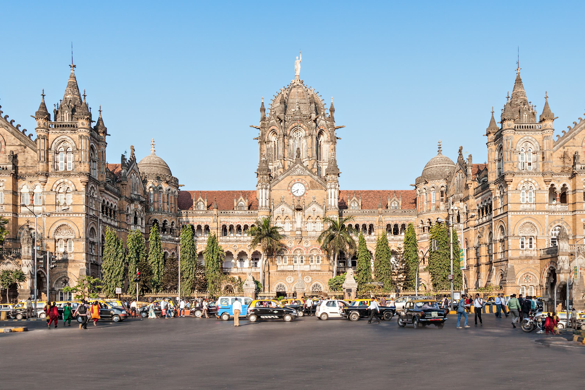
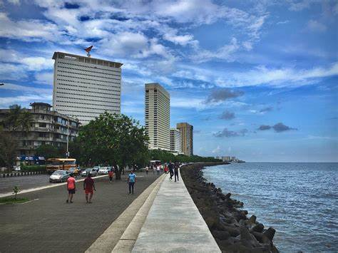
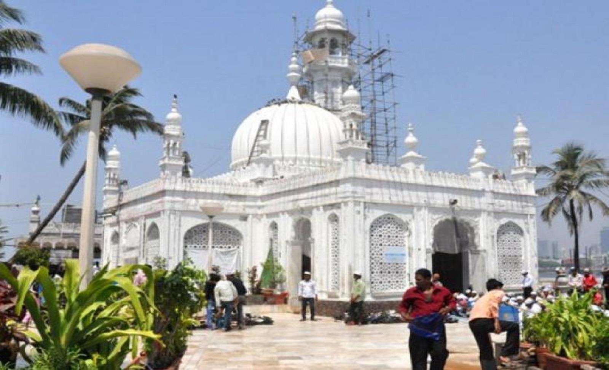

Explore the timeless beauty of Mumbai’s iconic landmarks — from majestic monuments to spiritual sites and historic architecture that reflect the city’s rich cultural legacy.

Mumbai’s most famous monument, overlooking the Arabian Sea and symbolizing the city’s colonial history.

A UNESCO World Heritage Site featuring ancient rock-cut cave temples dedicated to Lord Shiva.

A masterpiece of Victorian Gothic architecture and one of Mumbai’s busiest historic railway stations.

The iconic Queen’s Necklace, known for its beautiful sea-facing promenade and glittering night views.

A stunning spiritual landmark located on an islet, blending faith, architecture, and sea views.